This page follows the printed manual section by section. The numbers next to each heading are the page numbers of the original booklet. Menu names, item names and tactics names are written the way the English patch shows them in game.
The game uses the Japanese button layout: ○ (Circle) confirms and × (Cross) cancels.
Up to four people can play at the same time, but only during battles. Playing with others needs the following setup.
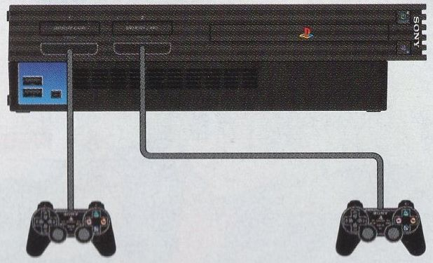
Two players
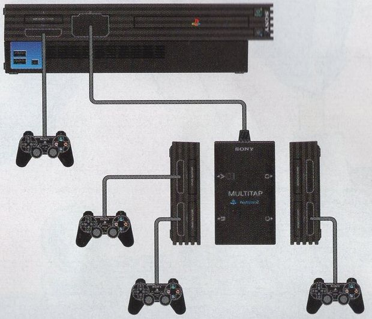
Three or four players
Two players
You need two controllers. Connect one to each controller port.
Three or more players
You need a PlayStation 2 multitap (sold separately) and one controller per player. Always connect the multitap to controller port 2 of the console and plug the extra controllers into the multitap. Use multitap ports A, B and C in that order, according to the number of players. Port D cannot be used, and the multitap cannot be connected to controller port 1.
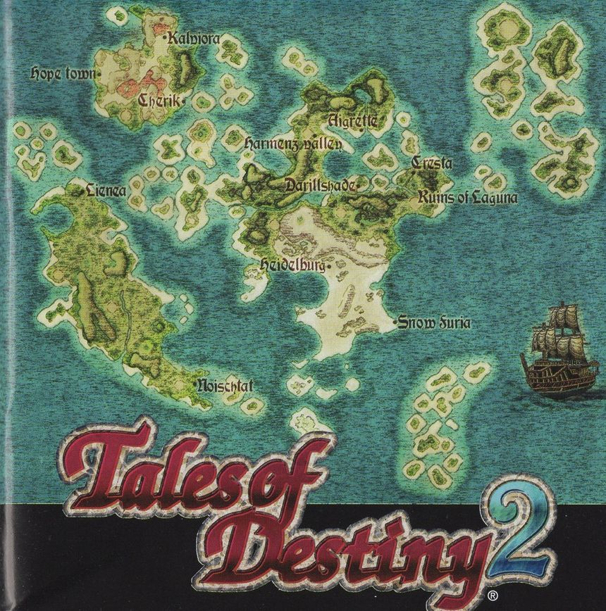
The world of Tales of Destiny 2: Story pages 2 and 3
History of the planet
More than a thousand years ago, a comet with a strange energy signature struck the planet and brought on an age of long winter.
Longing for sunlight, people developed an energy source called the Lens from the matter the comet left behind, and used it to build Dycroft, a city in the sky. What came of it was the rule of the Aeth'er, who lived in Dycroft, over the Er'ther on the ground. The Aeth'er tightened their grip with Belcrant, a weapon that struck the surface from above, but the Er'ther rose up as one and the Aeth'er Wars began.
The team that built Belcrant rejected the Aeth'er way of thinking and defected to the surface. There they created the Swordians, the ultimate weapon and the sum of all Lens technology, to stand against the cities in the sky. Thanks to the Swordians, swords with minds of their own, and the people who wielded them, every aerial city fell and sank to the bottom of the sea.
With the long passing of time all of this became ancient history. But the Swordians, who had put themselves into a long sleep after the war, were steadily drawing closer to the hour of their awakening.
New heroes
Stahn Aileron, a boy who ran away from home in search of thrilling adventure and fame, met Dymlos, a Swordian, a sword with a mind. In that moment fate began to move.
A struggle broke out over a giant Lens called the Eye of Atamoni. Kronos, risen again from the distant past, meant to conquer the world with ancient technology. As one crisis after another struck the world, Stahn met Rutee, Philia, Woodrow, Leon and the other Swordian wielders, fought alongside them, and saved the world.
And eighteen years later
A journey to become a hero. A journey to find a hero.
Before anyone noticed, the memory of those heroes had begun to fade from people's hearts. The one everybody is devoted to now is Elraine, the Holy Woman, who promises to bring happiness to all people right away.
In such times, in the small town of Cresta in the Kingdom of Seinegald, lived a boy named Kyle. With the hero Stahn for a father, he admired heroes more than anyone and spent his days longing for adventure.
Then a girl named Reala appears before him without warning, and meeting her leads Kyle into the adventure of his destiny.
Past, present and future. A grand tale that crosses time and draws in even the heroes of old is about to begin.
The world of Tales of Destiny 2: System pages 4 and 5
The Tales series are role playing games that tell a grand story through systems all their own. This time those systems are freer, easier to use and more fun. Here are the main points.
Customize everything
1. Enchants add extra effects that upgrade your Skills and Spells
Enchant lets you attach additional effects to Skills and Spells. They trigger all kinds of effects when you use that Skill or Spell in battle, and you are the one who picks them. Tune your Skills and Spells to your own taste.
2. Refine combines items, from tools to weapons and armor
The Rune Bottle, the item familiar from the Tales series for transforming items, is now the catalyst for fusing two items into one. Some valuable equipment can only be obtained this way, so try all sorts of combinations.
3. Cooking recipes are now unlimited?!
Cooking has become a fixture of the series. Besides cooking from recipes you are taught, you can now choose the ingredients yourself and create original dishes.
A battle system with real strategy
1. The new TT-LMB (Trust and Tactical Linear Motion Battle) allows finer battle orders
The system rests on trust and tactics. Give each character a role such as attacking or healing when you set the tactics, and battles go your way. Trust your companions' strength and build a careful strategy.
2. Spirits, a character's mental strength, largely decide victory and defeat
The Spirits gauge shows a character's mental strength and concentration. When it drops, accuracy and evasion fall with it. Keeping your own Spirits up while wearing down the enemy's is what settles a fight.
3. Chains are more fun and easier
The combo system, one of the pleasures of the series, has evolved. Attacks come in four broad kinds: normal attacks, Skills, Arcane Artes and Spells. Attack in that order and they link together easily, and Enchants make even longer chains possible.
4. Four player battles are recommended
With a PlayStation 2 multitap, up to four people can fight at once. The camera moves to keep both the controlled characters and the targeted enemy on screen, so you never lose sight of your own character.
Starting the game pages 6 and 7
Title screen
After the opening animation, the title appears with the options NEW GAME, CONTINUE, CUSTOM and PREVIEW. Choose with the directional buttons or the left stick and confirm with ○. Press START to skip the opening animation.
NEW GAME
Start the game from the beginning.
CONTINUE
If a memory card (8MB) for PlayStation 2 holds save data, you can pick up where you left off. Choose CONTINUE, then the save you want to load. To start from suspend data, choose Resume. The game only uses MEMORY CARD slot 1.
CUSTOM
Settings such as message speed and battle difficulty. The same settings are under Custom in the in game menu (see Custom).
PREVIEW
Movies of upcoming Namco games.
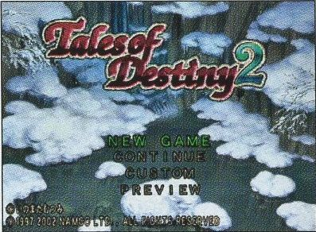
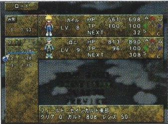
CONTINUE
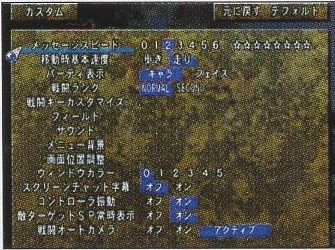
CUSTOM
Naming characters
You can rename the heroes at any time from Status in the menu. Put the cursor on a character's name and confirm to open the name entry screen. Hiragana, katakana and ABC (alphabet) are available. Switch between them on screen or with L1 and R1. Enter a character with ○ and delete one with □. When you are done, choose the confirm option and press ○. Default restores the original name and Clear erases what you typed.
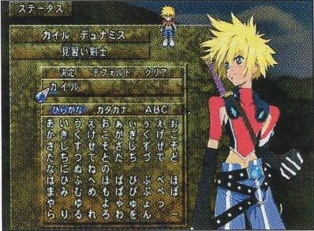
Saving
Save your progress from Save in the menu. On the 3D field map you can save anywhere. On normal maps (towns and dungeons) you can only save while standing on a memory circle.
Saving needs a PlayStation 2 memory card (8MB) with at least 61KB free, inserted in MEMORY CARD slot 1. Pick the file to save to. You can keep up to 99 files. Overwriting a file erases the data that was there.
Where saving is not possible, the Suspend option inside Save lets you interrupt the game. Suspending needs 287KB of free space and returns you to the title screen. To carry on, choose CONTINUE on the title screen and then Resume. Suspend data is deleted as soon as it has been loaded once.
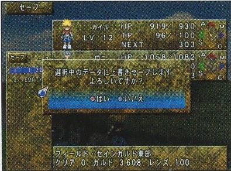
Memory circles
You cannot save just anywhere. Saving is basically limited to the 3D field map, but in dungeons and other normal maps you can save while standing on a memory circle.
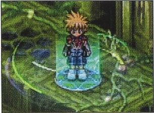
The game screens pages 8 and 9
The game has four kinds of screen.
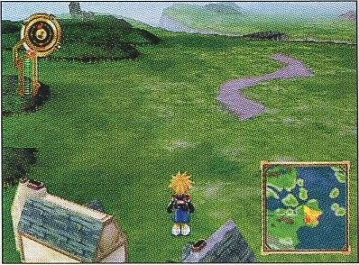
3D field map
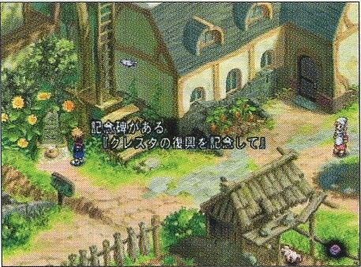
Normal map: town
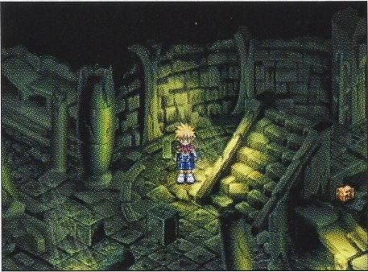
Normal map: dungeon
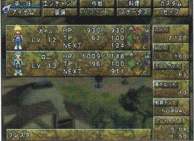
Menu screen
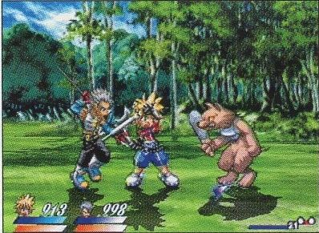
Battle screen
3D field map
Here you move your character from town to town and search for the next destination. Vehicles you obtain during the adventure are also controlled on this screen. Monsters live here, so battles can break out while you travel.
Normal map
Entering one of the towns or dungeons dotted around the 3D field map brings up this screen. Most of the story unfolds here, with all kinds of events along the way. Talk to people in town to gather information, take on a new dungeon, and return to town to rest when the fighting has worn you out.
Towns have shops that sell items, inns and more. Press ○ to talk to people or to examine things. Try it in all sorts of places.
Dungeons are full of contraptions. Look for hints, try whatever actions are possible, and use special items to solve the puzzles and press on.
Menu screen
Press △ on the 3D field map or a normal map to open it. Check your characters' condition, use tools and Spells, and change settings here.
Battle screen
Shown when you run into enemies on the 3D field map or in a dungeon, or when an event pits you against one. Defeating enemies earns experience, and the heroes level up and grow stronger.
How the screens connect
The game moves back and forth between these screens. The menu can be opened anywhere except during battle, and battles take place on the 3D field map and inside dungeons.
Key help
If you leave the menu screen idle for a moment, key help appears. Put the cursor on an entry and it shows the controls that apply there. Press SELECT to show or hide it.
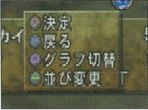
Basic controls pages 10 and 11
The controls differ from screen to screen. On the menu screen, the key help is a useful reference too. The buttons used in battle can be changed under Custom.
The ANALOG mode switch is always on (LED lit red) and cannot be turned off. Vibration can be switched on or off under Custom. The R3 button is pressed by pushing the right stick in. The game requires an analog controller. A DUALSHOCK works the same way as a DUALSHOCK 2.
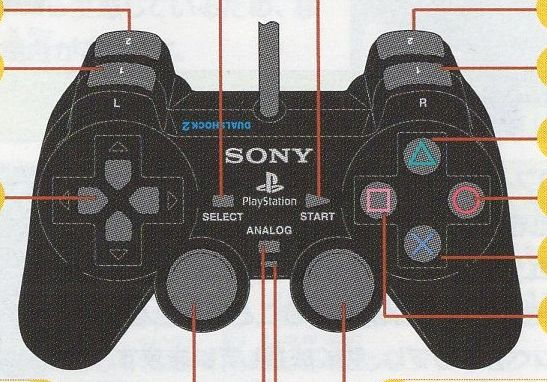
Analog controller (DUALSHOCK 2)
3D field map
Directional buttons / left stick
Move the character, select entries
○
Confirm
×
Cancel
△
Open the menu screen
L1 / R1
Rotate the camera left and right
L2
Use the Sorcerer's Scope (once you have it)
R3 (press the right stick)
Show the World Map (once you have it)
Right stick
Analog camera control: rotate left and right, tilt up and down
START
Show or hide the navigation map and compass
SELECT
Start a Screen Chat
Normal map
Directional buttons / left stick
Move the character, move the cursor, select entries
○
Confirm, talk, examine
×
Cancel. Held with a direction: walk or run
△
Open the menu screen
L1 / R1
Turn on the spot
L2
Use the Sorcerer's Scope (once you have it)
R2
Use the Sorcerer's Ring (once you have it)
R3 (press the right stick)
Show the World Map (once you have it)
SELECT
Start a Screen Chat
Menu screen
Directional buttons / left stick
Move the cursor, select entries
○
Confirm
×
Cancel
△
Rearrange menu entries, rearrange characters
□
Switch the Active Level Graph
SELECT
Show or hide key help
Battle screen
Directional buttons / left stick
Move the character, move the cursor, select commands
○
Normal attack (alone or with a direction)
×
Use a Skill or Spell (alone or with a direction)
△
Open the battle menu
□
Guard
L1
Switch TACTICS (three orders)
R1
Change the enemy target (also shows the enemy's status)
L2 / R2
Skill and Spell shortcuts (when set under Artes in the menu)
START
Pause
SELECT
Switch battle mode (Auto / Semi-Auto / Manual)
Note: with a PlayStation 2 multitap, up to four people can each control a character in battle. This manual explains the controls for a single player.
3D field map pages 12 and 13
You travel between towns and dungeons on the 3D field map.
Reading the screen
Move with the directional buttons or the left stick. L1, R1 and the right stick let you move the camera freely. R3 shows the World Map, and START shows or hides the compass and the navigation map.
Compass
Shows east, west, south and north (E W S N). The red arrow points toward your current destination.
Navigation map
A map of the surroundings with your position and the direction the character and camera are facing. White dots are towns, red dots are dungeons, and the yellow circle is your current destination.
Altitude meter
Shows how high the party is. The meter turns red as altitude increases.
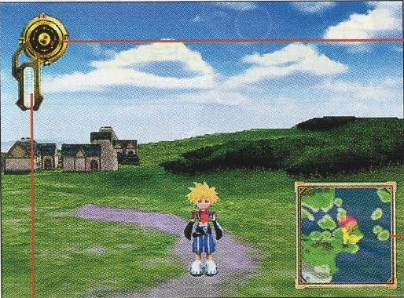
World Map
Once you obtain the World Map item you can view a map of the whole world. Besides your position it lists the towns and dungeons you have visited, and lets you check the shops there and what they sell. Press R3 to open it and × to return to the 3D field map. It can be opened on normal maps too.
Press ○ on an entry in the list of towns and dungeons to see the goods carried by the shops at that location. Only shops you have visited show their stock.
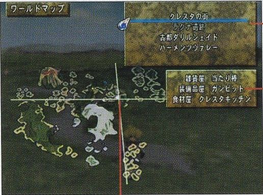
Towns and dungeons
There are many towns and dungeons on the 3D field map. Go near one and its name appears together with ○ Enter and × Cancel. Press ○ to go in. When you try to leave a town or dungeon, a prompt to leave appears. Press ○ again to step out onto the 3D field map.
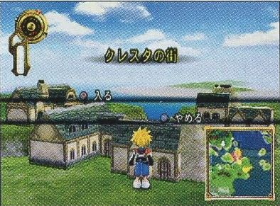
Screen Chat
On the 3D field map and on normal maps you can listen to the characters talk among themselves. Press SELECT to start a Screen Chat. They range from idle chatter to conversations with important hints. Subtitles can be switched on or off under Custom.
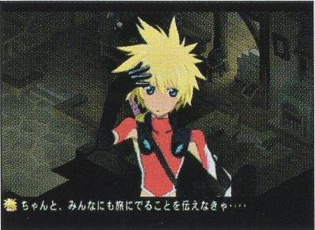
The airship Ixifoslar
As the adventure moves on, an airship called the Ixifoslar appears, and getting it widens the area you can reach. The airship flies over the 3D field map. It cannot land on special terrain such as sea or mountains, or when it is flying too high.
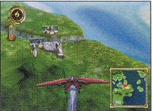
Boarding and leaving
Board
Go up to the airship and press ○
Get off
Descend a little, then press ×
In flight
Directional buttons / left stick
Up and down: climb and descend. Left and right: turn
○
Forward
□
Backward
L1 / R1
Turn (same as the directional buttons and left stick)
Right stick
Analog turning and camera tilt
Normal map: towns and dungeons pages 14 to 17
Entering a town or dungeon from the 3D field map switches to this screen. You move the adventure forward by using the facilities in town and taking all kinds of actions.
Reading the screen
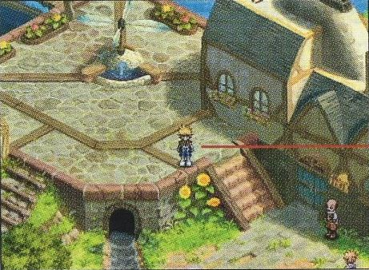
Town
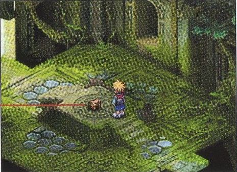
Dungeon
Character: Move Speed under Custom sets whether the directional buttons walk or run by default.
Treasure chests: press ○ to take the item inside.
Talking and examining
Face a person or an object and press ○ to talk or to examine it. Chests are opened the same way. Towns and dungeons hold information you need to progress. Talk to people often, examine anything that looks suspicious, and collect as much information as you can.
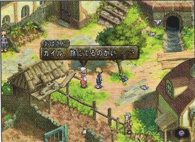
Moving objects
Some objects in towns and dungeons can be moved. Face one, hold ○ and press the directional buttons or the left stick. You can pull as well as push. If you get stuck in a dungeon, look around for something movable and try this.
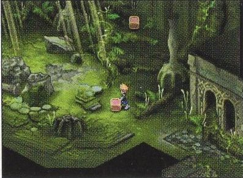
Sorcerer's Ring
Once you have the Sorcerer's Ring, R2 fires a heat ray that strikes with force. It works without being equipped and has many uses, such as lighting things or hitting distant switches. Each shot uses up one Lens, so fire only when you need to.
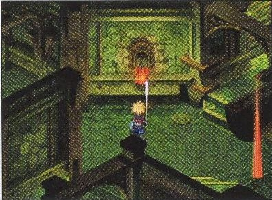
Sorcerer's Scope
The Sorcerer's Scope has a detection function that finds things you cannot normally see. Once you have it, press L2 (no need to equip it) to scan the area around the character for a few seconds. Each use consumes Lens, so scan only when you need to.
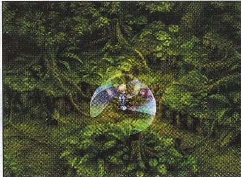
Getting and using Lens
You get Lens by defeating enemies. Lens is used up by special items such as the Sorcerer's Ring and when combining items with Refine in the menu.
Facilities in town
Towns have inns, item shops, weapon shops and other facilities that help your adventure.
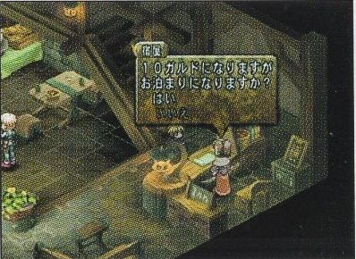
Inn
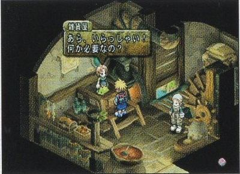
Item shop, food shop
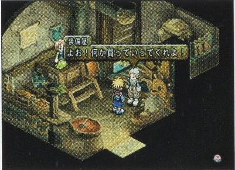
Weapon shop, armor shop
Inn
Pay the fee in Gald to stay the night. It restores the whole party's HP (Hit Points) and TP (Technical Points) to maximum and cures status ailments, KO included. Where you are allowed to rest in a bed in a private house, the effect is the same as staying at an inn.
Item shop, food shop
Buy tools and ingredients, and sell items you own. Some are general stores that sell both tools and equipment. The ingredients on offer differ from shop to shop and region to region.
Weapon shop, armor shop
Buy weapons and armor, and sell items you own. Some equipment shops carry both.
Shopping
Talk to the shopkeeper and four options appear: Buy, Sell, Equip and Leave shop.
Buy
Pay for items with Gald. You can hold up to 15 of each kind of item, so you can buy up to 15 including the ones you already own.
Choose Buy with the directional buttons or left stick and confirm with ○.
Choose the item you want from the list. While equipment is selected, the characters who can equip it are shown at the top left and the change in stats at the bottom left. With several characters, switch between them with △. To buy several kinds at once, pick the kind with up and down and set each quantity with left and right before confirming.
When asked "Is this OK?", press ○ to complete the purchase or × to cancel.
Sell
Sell anything you own except valuables. Selling several kinds at once works the same way as buying.
Equip
Opens the same screen as Equip in the menu, so you can equip on the spot.
Leave shop
Stop shopping and leave. Cancelling with × also ends the shopping.
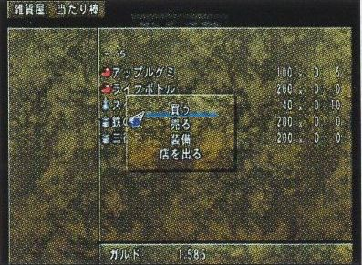
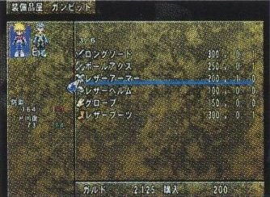
Menu screen and Active Level Graph pages 18 and 19
Press △ on the 3D field map or a normal map to open the menu, where you use items, change equipment and adjust settings.
Reading the menu screen
The top four characters on the screen take part in battle. Use △ to change who fights. The character shown at the very top is the player character you control on the maps and in battle.
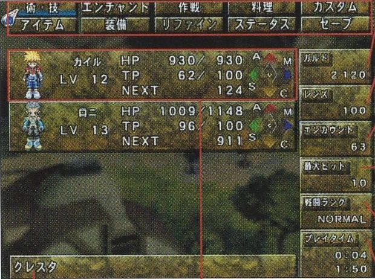
Menu entries
Artes, Enchant, Tactics, Cooking, Custom in the top row and Items, Equip, Refine, Status, Save in the bottom row. Press △ to swap the positions of the entries.
Top: play time since the data was loaded. Bottom: total play time.
Location
The name of the place you are in.
Character window
A short summary of each character. See the table below.
Character window
LV
Current level.
HP
Hit Points, the character's stamina. Current value / maximum.
TP
Technical Points, needed to use Skills and Spells. Current value / maximum.
NEXT
Experience needed to reach the next level.
Graph
The Active Level Graph. Press □ to switch between the Skill graph and the Spell graph.
Active Level Graph
Active Levels are the values you need in order to learn Skills and Spells. There is a Skill family and a Spell family, and the Active Level Graph plots the value of each level. Your current levels and the levels each Skill or Spell requires can be checked under Enchant. Using and setting what you have learned is covered under Artes.
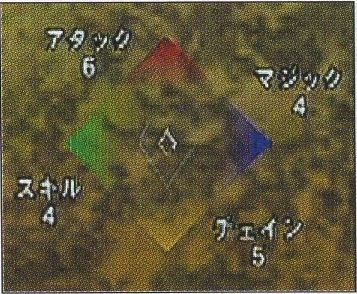
Skill Active Levels
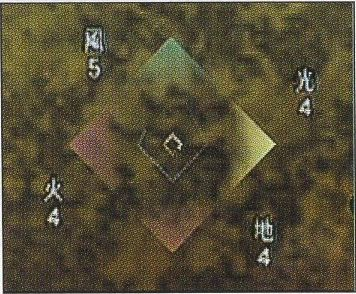
Spell Active Levels
Skill Active Levels
The values needed to learn Skills. There are four: Attack, Skill, Magic and Chain. Each Skill has a required value for each of them, and you learn the Skill once all are met.
Level
How it rises
Attack (A)
Rises when you use normal attacks.
Skill (S)
Rises when you use Skills and Arcane Artes.
Magic (M)
Rises when you use Spells.
Chain (C)
Rises when you perform chain attacks.
Spell Active Levels
The values needed to learn Spells. Each Spell requires levels in four elements, and you learn it once all are met. The elements differ by character: each has four of the six (Earth, Wind, Water, Fire, Light, Dark) from the start, and this cannot be changed.
Level
How it rises
Earth / Wind / Water / Fire / Light / Dark
Each rises when you use Spells or Skills of that element.
Artes pages 20 and 21
Each character learns their own Skills and Spells. To use them in battle you have to set them up on this screen.
Use and set Skills and Spells here. This is also where you choose how each character is controlled in battle and pick the battle mode. Press L1 or R1 to switch between characters.
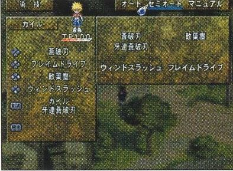
Choosing the battle mode
First choose a battle mode: Auto, Semi-Auto or Manual. When playing alone, set every ally other than the player character to Auto. With several players, set each character to suit its player. During battle, SELECT switches the player character's battle mode.
Auto
Acts on its own according to the tactics you have set (see Tactics).
Semi-Auto
You control the character directly. Jumps and dashes happen automatically when attacking.
Manual
You control the character directly. Jumps and dashes are done by hand.
The player character is the one you control directly on the maps and in battle: the character shown at the top of the menu screen.
Auto characters
A character in Auto mode shows the screen on the right. Select a Spell shown in white to use it right there. Skills and Spells you dim with △ will not be used in battle.
Selecting a Skill or Spell brings up a help panel. TP is the TP it costs, ARMD and ACTION show the Enchants currently set as Armed and Action (see Enchant), and COUNT is the number of times it has been used so far.
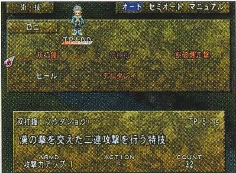
Semi-Auto and Manual characters
A character in Semi-Auto or Manual mode shows the screen on the right. Skills and Spells registered here are triggered in battle with a combination of the directional buttons or left stick and ×. There are four slots, one per direction input. L2 and R2 each hold a shortcut.
Below the character's name, move the cursor to the right to reach the use screen, where Spells shown in white can be cast. How to use them in battle is covered under Skill and Spell attacks.
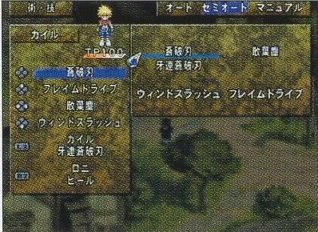
Skill and Spell shortcuts
On the Artes screen of a Semi-Auto or Manual character you can set shortcuts. L2 and R2 take one Skill or Spell each and trigger it at a single press during battle. A shortcut can hold any Skill or Spell of any character taking part in the battle.
Elements
There are six elements: Earth, Wind, Water, Fire, Light and Dark. As a rule they oppose each other in pairs: Earth and Wind, Water and Fire, Light and Dark. Hit a Fire enemy with a Water Spell and you deal heavy damage, while a Fire Spell on a Fire enemy does very little. Enemies differ in nature though, so the element that works best changes from case to case. Each character you control has four elements from the start and learns Spells of those elements.
Enchant pages 22 and 23
An Enchant is an additional effect attached to a Skill or Spell you have learned. Set one and it takes effect in battle.
Every Skill and Spell has two kinds of Enchant: Armed Enchants, whose effect appears automatically during battle, and Action Enchants, extra effects you trigger by hand.
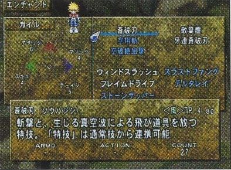
Reading the screen
The Enchant screen changes depending on whether you are looking at a Skill or a Spell, and on whether it is learned or not.
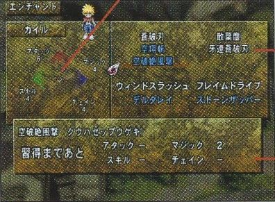
An unlearned Skill selected
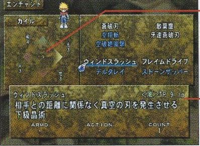
A learned Spell selected
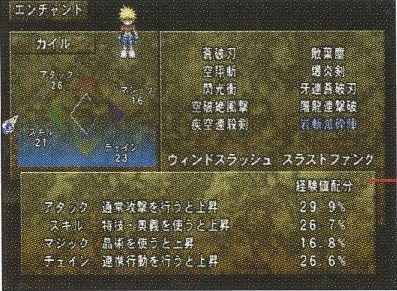
Active Level details
Active Level Graph
Your current Skill Active Levels, or Spell Active Levels when a Spell is selected.
Skills and Spells
Skills are in the upper rows, Spells in the lower rows. White text means learned, blue means not yet learned.
Help (unlearned)
Shows the Active Levels you still need in order to learn it.
Help (learned)
Shows the element, the TP needed, a description, the Armed and Action Enchants that are set, and the number of times it has been used (which equals its Enchant points when no Enchant is set).
Help (levels)
Move the cursor left from the Skills to see an explanation of the Skill Active Levels, or left from the Spells for the Spell Active Levels.
Learning Enchants
Learning an Enchant requires specific Active Level values: Skill Active Levels for a Skill, Spell Active Levels for a Spell. They come in four stages, and the levels are raised the same way as for learning. An Enchant only works once it is set, and setting one requires having used that Skill or Spell many times. The help panel shows the Active Levels and the count (number of uses) each one needs.
Setting Enchants
Select the Skill or Spell, then choose Armed or Action. From the list on the right, pick a level from 1 to 4 for the Enchant you want and register it. The higher the level, the stronger the effect.
White text means learned and ready to set. Red means learned, but you lack the Enchant points to set it. Blue means not yet learned.
The number in parentheses next to the name of the Skill or Spell is its Enchant points.
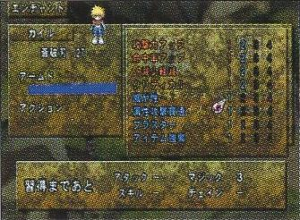
Armed Enchants
Effects such as stat boosts that apply automatically whenever you use the Skill or Spell in battle. The kinds available differ for every Skill and Spell.
Example
Effect
Attack Up
Raises the attack power of the Skill.
Conserve SP
Reduces the SP the Skill consumes.
Boost
Attack Spells deal more damage and healing Spells restore more.
Speed Cast
The Spell is cast faster.
Action Enchants
While using a Skill or Spell in battle, an input such as holding ○ triggers the extra effect you set beforehand, at a cost in SP or TP. Kinds and effects differ for every Skill and Spell, and some, such as healing Spells, have no Action Enchants at all.
Example
Effect
Blow Away
Hold ○ on hit to send the enemy flying far back.
Counter Trigger
Enter the Skill input when you take damage on the ground to answer with that Skill.
HP Drain
Hold ○ to absorb HP in proportion to the damage dealt.
Stagger Cancel
Hold ○ to stay able to act even while the Spell is going off.
Tactics pages 24 and 25
Here you tell characters in Auto mode how to behave in battle. Four things can be set: orders, tactics, attack and defense.
Reading the screen
MEMBER'S POSITION
Shows where each character stands in battle under the tactics you chose: rear, middle or front. Allies basically advance toward the right side of the screen.
Orders
Each of the three orders stores a complete way of fighting. Press △ to show the list.
Character status and tactics
Use left and right on the directional buttons or left stick to set tactics, attack and defense for each character. Press △ to show the list.
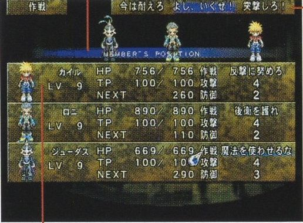
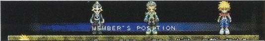
Rear, middle, front
Orders
Choose three orders you like, and for each one set every character's tactics, attack and defense. Select an order during battle and the Auto characters act on the instructions stored in it. A battle always starts with the middle of the three orders selected. Change it with L1.
Order names
.....
Let's go!
I'm counting on you all.
Charge!
Stay strong
Use spells
Leave it to me!
Custom strategy
Now's our chance!
Steamroller
Tactics
Sets a character's overall behavior in battle, including their place in the formation.
Tactics
Behavior
Attack Freely
Takes the position that suits the character and picks targets by their own judgment.
Attack Close
From the front or middle, attacks nearby enemies with weapons as much as possible.
Follow Leader
Follows the player's character and attacks while the player is attacking.
Counter
In the front line, guards against the enemy's attack and then strikes with weapons.
Find Opening
In the middle, casts Spells while the enemy's SP is 50% or more and attacks when it is below 50%.
Protect Rear
In the middle, attacks nearby enemies with weapons while aiming Spells at enemies that are attacking.
Crush Weak
Behind the middle, goes after enemies with low HP using Spells and attacks.
Aim High
Behind the middle, gives priority to airborne enemies with attacks and Spells.
Defeat Fast Foes
In the rear, mainly uses Spells against enemies with high evasion.
Block Magic
In the rear, charges Spells while attacking enemies that begin casting.
Attack
Sets the conditions under which a character attacks physically or with Spells.
No.
Behavior
1
Does not attack or cast on their own initiative.
2
Attacks and casts until SP and TP fall to 75%.
3
Attacks and casts until SP and TP fall to 50%.
4
Attacks and casts until SP and TP fall to 25%.
5
Attacks until SP and TP run out.
Defense
Sets the conditions under which a character guards or casts healing Spells.
No.
Behavior
1
Fights on the offensive until their strength gives out.
2
Holds back from attacking at 25% HP or less, and heals allies who are at 25% HP or less.
3
Holds back from attacking at 50% HP or less, and heals allies who are at 50% HP or less.
4
Holds back from attacking at 75% HP or less, and heals allies who are at 75% HP or less.
5
Always guards, and heals any ally below 100% HP.
Cooking pages 26 and 27
Combine the ingredients you have gathered into dishes, and fine tune cooking, for example which dish is made automatically after a battle.
Cook with the ingredients you carry. Effects range from HP recovery to TP recovery, and some dishes even raise the Active Levels needed to learn Skills and Spells. You can only make one dish at a time. Depending on the mix of ingredients the effect may be weaker than the proper dish, and you cannot cook while the party is full (right after a meal).
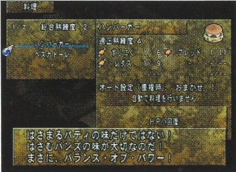
Reading the screen
A dish with an "A" in front of its name has an auto setting.
Skill Level
Your overall cooking proficiency.
Adequate Level
The proficiency this dish calls for.
Ingredients
Shown as ingredient name, amount used / amount you have.
Auto Set
The current auto cooking setting. Press △ on a dish name to open its settings menu.
Effect
What the dish does.
Dishes learned
White: recipes you were taught. Dark text: not enough ingredients. Dishes of your own are shown in yellow (good result) or purple (bad result).
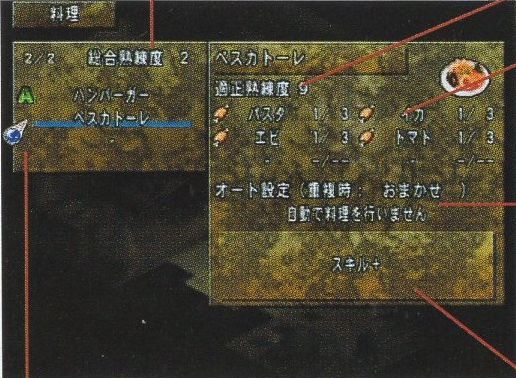
New recipes (original dishes)
Pick between two and six kinds of ingredients from what you carry and cook them. When the dish is done you are offered ○ to save it or × not to. Press ○ to keep the recipe. You can give the dish a name as well. An original dish can also fail. In that case nothing is made and the recipe cannot be saved.
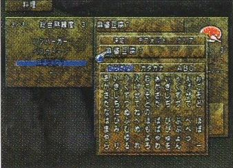
Auto Set (settings menu)
Have a dish cooked automatically when a battle ends.
Conditions for auto cooking
Never cook automatically.
Cook after every battle.
Cook every 5 battles.
Cook every 10 battles.
Cook if 3 or more members are at 80% HP or less.
Cook if 3 or more members are at 80% TP or less.
Cook if 2 or more members are at 60% HP or less.
Cook if 2 or more members are at 60% TP or less.
Cook if 2 or more members are at 40% HP or less.
Cook if 2 or more members are at 40% TP or less.
Cook if even 1 member is at 20% HP or less.
Cook if even 1 member is at 20% TP or less.
Cook when someone has a status ailment.
Auto-Cook Overlap (settings menu)
When the auto conditions of two or more dishes are met at once, the dish is picked by the method chosen here.
Method
Short name
Cook a dish at random.
Up to you
Cook the dish you are least practiced at.
Recipe proficiency
Cook the dish you can make the most times.
Times cookable
Cook the dish with the cheapest ingredients.
Ingredient cost
Rename (settings menu)
Change the name of a dish you created or arranged.
Arrange (settings menu)
Rework the ingredients of a dish you have learned to create a new one.
Delete (settings menu)
Delete the recipe of a dish you created or arranged.
Proficiency
Cooking a lot raises your Skill Level. The Adequate Level set for each dish is the Skill Level at which that dish tends to succeed.
Custom pages 28 and 29
Adjust the game to your liking, from message speed to sound.
Undo restores the settings as they were before your changes and Default returns everything to the initial settings. Change each entry with the directional buttons or left stick, and press × at the end to finish.
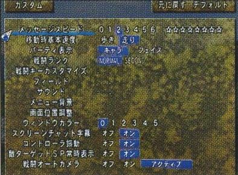
Message Speed
How fast messages are displayed, in steps from 0 to 6. The lower the number, the faster the text.
Move Speed
Sets the directional buttons to Walk or Run on normal maps. With the left stick, the speed follows how far you tilt it.
Party Display
Switches how characters are shown on the menu screen.
Battle Rank
The battle difficulty. It affects enemy strength and much more. NORMAL and SECOND (somewhat hard) are available, and other ranks appear once certain conditions are met.
Battle Key Config
Freely reassign the buttons used in battle.
Field: Camera L/R
Chooses which of L1 and R1 turns the view to the right.
Field: Airship Rev
Changes the airship controls. Off: up descends and down climbs. On: up climbs and down descends.
Sound: BGM
Volume of the music.
Sound: SFX
Volume of the sound effects.
Sound: Battle Voice (volume)
Volume of voices in battle.
Sound: Event Voice (volume)
Volume of voices in events.
Sound: Pan
Left and right balance in stereo.
Sound: Stereo
Choose Off to switch to mono.
Sound: Battle Voice
Voices in battle on or off.
Sound: Event Voice
Voices in events on or off.
Sound: Sound Test
Listen to music and sound effects (see below).
Menu BG
Change the menu background freely. Choose from five types and mix the color of each corner of the screen from R (red), G (green) and B (blue).
Screen Adjust
Shift the position of the picture with the directional buttons or left stick. Press ○ when done.
Window Color
Choose the window color from six kinds.
Screen Chat Subtitles
Screen Chat subtitles on or off.
Controller Vibration
Controller vibration on or off.
Always Show Target SP
Display of the targeted enemy's SP on or off.
Battle Auto Camera
How the camera moves in battle. Off zooms on the player character alone. On also keeps the targeted enemy in frame. Active also brings in allies who are casting and enemies about to attack.
Sound Test
Sound Test, inside Sound, plays the music, sound effects and voices of the game. Select with the directional buttons or left stick and confirm with ○.
Type
Listen to BGM (music), SE (sound effects), VOICE (shouts) and more.
Play time / track number
Press ○ on the time to open the control panel. Press it on the track number to list the tracks.
× icon
Hides the controls. Press ○ or × to bring them back.
Speaker icon
Adjusts the sound on this screen. Raising the tempo number speeds up the pitch of the track.
Bars icon
Switches the analyzer.
Note icon
Shows what each instrument is playing.
Control panel
Control panel
1
Play / pause (△)
2
Stop (□)
3
Previous (L1)
4
Next (R1)
5
Repeat / advance automatically. Repeat plays the same track or sound again. Advance plays them in order of track number.
Items pages 30 and 31
You get items by winning battles and by buying them at facilities in town.
Check and use the items you carry. Select a weapon, armor or other piece of equipment and you can quick equip it right here. Items are sorted into New, Item, Weapon, Armor and Trinket, and everything except New is divided further.
Using items and quick equip
Move the cursor to one of the categories and confirm, then choose an item. Next choose who will use or equip it and confirm with ○. If using or equipping it changes any stats, the change is shown beforehand as in the picture.
Item categories
Equipment that is currently equipped does not appear on the Items screen, unless you own more than one of it.
New
Items you have just obtained.
Item (Item / Cookware / Food / Valuable)
Recovery items of every kind, cooking related items, items vital to the story, and so on.
Weapon (Sword / 2-Hand / Staff / Bow)
Affects attack power. Each character can equip different kinds.
Armor (Armor / Clothes / Helmet / Crown)
Affects defense. Each character can equip different kinds.
Equipment other than weapons and armor, with all sorts of effects depending on the kind.
Item icons
Every item has an icon, and the design depends on the kind of item. Consumables that can be used at any time, such as Apple Gel and Life Bottle, show a gel. Consumables that can only be used in battle, such as the Magic Lens, show a bottle. Equipment icons take the shape of the thing itself: a sword for swords, armor for armor. Some icons have a frame around them. See When an item icon has a frame.
Examples of item icons
Consumable that can be used at any time.
Apple Gel, Life Bottle
Consumable that can only be used in battle.
Magic Lens
Consumable that cannot be used in battle.
Sage
Valuable. Cannot be discarded.
World Map
Cooking tool.
Vegetable Knife
Ingredient for cooking.
Cheap Meat, Apple
Sword type weapon.
Short Sword
Two handed weapon.
Poleaxe
Body armor.
Leather Armor
Helmet.
Leather Helm
Jewelry.
Poison Charm
Outfit.
Leather Cape
Boots.
Leather Boots
Equip pages 32 and 33
How to equip weapons and armor, and how the slot effects attached to equipment work. Equip can also be opened while shopping.
Equip the gear you carry. First select the part you want to change, then pick a sort order and the item list appears. The change in stats that the selected item would bring is shown on the left. If you are happy with it, confirm with ○. Press △ to take off the item currently equipped, and L1 or R1 to switch characters. Put the cursor on a character's name and press □ to equip the strongest items automatically. Quick equipping is also possible from Items.
Reading the screen
Sort
The sort options depend on the kind of item. Attack, Defense, Slot Level, Block Count, Stats and Evade sort from the highest value down. Alphabetical sorts by name. Price (high) and Price (low) sort by price.
Equipment list
Shows only the items the selected character can equip.
Help
Press □ to see the stats of a piece of equipment.
Current equipment
Shows the items equipped and where they are worn.
Slot effects
If the item currently equipped has slot effects, they are listed here.
Slot Level
Some equipment carries special effects called slots. While you wear a piece with a slot effect, certain stats of that character go up or a special effect is active.
There are many kinds of slot, each with a level from 1 to 8. The higher the number, the stronger or more advanced the effect. By combining items with Refine, a single piece of equipment can carry up to two slot effects. The icon of an item with slot effects has a blue or green frame.
Example slot
Effect
Feat
Raises accuracy.
Healing
Restores HP at regular intervals.
Awesome
Increases the experience you earn.
Attack
Raises attack power.
Magical
Speeds up growth of the Magic level (Skill Active Level).
Trample
Speeds up growth of the Attack level (Skill Active Level).
The name of a slot changes as its level rises.
When an item icon has a frame
Item icons can have a yellow, blue or green frame. These mark special conditions such as slot effects.
Shown on special items, such as ones that cannot be discarded.
Shown on equipment with one slot.
Shown on equipment with two slots.
Refine, Save, Status pages 34 and 35
Refine
Combine items you carry. Refining needs the item Rune Bottle and uses up a set number of Lens. If you combine items that have slot effects, those effects carry over into the result.
Sort
Tabs for Items, Weapon, Armor and Trinket.
Item list
Choose the items to combine from here.
Materials and results
The numbers next to an item are the amount used for refining / the amount you have. While choosing the second material from the list, press left to preview RESULT A and right to preview RESULT B.
MATERIAL
The two items used as materials. Press △ to remove the selected one.
Rune Bottles: the number needed for this refine / the number you have.
Lens: the number this refine consumes / the number you have. The cost depends on the combination.
RESULT
Put the cursor here and press ○ to carry out the refine. Some combinations of materials offer a choice of two results, in which case one is shown under A and one under B.
Shows the current title. Titles are earned by meeting certain conditions in events and battles, and some of them change the character's parameters. To change it, put the cursor on it, confirm, and pick the one you like from the list.
Parameters
See the table below. TP and the experience needed for the next level are shown in the character window of the menu screen.
Equipment
The items currently equipped as Weapon, Body, Head, Arm, Outfit, Boots and Jewelry.
Elements
The character's current elemental values.
Active Level Graph
The current Active Levels.
Parameters
LV
Current level. It goes up when experience reaches a set amount, and every stat rises with it.
HP
Hit Points (stamina). The maximum is shown.
Atk
Attack power: the character's own strength plus that of the equipment.
Def
Defense: the character's own strength plus that of the equipment.
Int
Affects things such as the power of Skills and Spells.
Hit
The ability to land attacks.
Evade
The ability to avoid enemy attacks.
Luck
Affects many things, battles included.
SP Regen
The ability to recover SP (Spirits Points), which attacking and guarding require.
SP Reduce
The ability to use less SP.
TP Regen
The ability to recover TP (Technical Points), which Skills and Spells require.
TP Reduce
The ability to use less TP.
Cast Speed
How fast Spells are cast.
Battle screen pages 36 to 39
Meeting an enemy on the 3D field map or in a dungeon switches to the battle screen.
Reading the battle screen
Press R1 during battle to see the whole battlefield and change your target. The enemy's status is shown at the same time.
Normal viewWhile changing target
HITS / CHAIN
The hit count of the current string of attacks, and the chain count including your allies' attacks.
Battle menu
Opened with △. Use items, change equipment and more.
Battle mode
Switched with SELECT.
Ally status
From the top: current HP, SP gauge, TP gauge.
ENEMY DATA
The enemy's status, shown while R1 is held. Using the item Magic Lens also reveals things such as its weak points.
Enemy target
Marks what the player character is aiming at.
TACTICS
Press L1 to show the orders.
Positions
The circles on the red bar are enemies and the numbers on the blue bar are your characters, numbered 1 to 4 in the order of the ally status display from the left. When an ally gets behind an enemy, that number appears on the red bar and a special state applies (see On the enemy's right side).
SP (Spirits Points) gauge
SP stands for each character's mental strength and concentration, and enemies have it too. Basically it goes down when you attack, and when it is low your accuracy and evasion drop. It recovers while you are not attacking, and guarding and Spells restore it as well. SP always starts a battle at 100%. When there is not enough of it, "SP××" is shown next to the character.
Spirits Blaster
Keep repeating actions such as attacking the enemy, taking hits and guarding against attacks, and the character begins to glow and enters a state called Spirits Blaster for a while. In this state SP is locked at 100% and attacking does not lower the gauge. Enemy attacks still land, though, and the damage you take shortens the effect.
Your attacks are not interrupted when you are hit and carry straight on. Spirits Blaster ends when a certain time has passed, when your side uses a healing Spell or healing item, or when HP reaches 0. If HP reaches 0 during Spirits Blaster, the character is left at 1 HP instead of being KO'd.
When a character turns red, Spirits Blaster is close.
TP (Technical Points) gauge
TP is what Skills and Spells run on. Each use spends a set amount, and it comes back as time passes. It also recovers when normal attacks hit, among other things. Unlike SP, TP is not restored automatically when the battle ends.
Messages on screen
Some of the messages that appear at the top left when you hit or defeat enemies. For the ones shown next to a character, see Techniques in battle.
TECHNICAL SMASH!
A bonus for defeating an enemy under specific conditions. It affects your battle grade and the item drop rate.
○○ BUSTER
Shown when two or more enemies are defeated within a single chain of attacks. The number is how many were defeated.
○○ CHAIN
Shown with the chain count when one character defeats an enemy with a chain of four or more.
NO DAMAGE
Shown when you win a battle without any ally taking damage.
TRIANGLE
Shown when a three hit normal attack is done with three different inputs.
AERIAL
Shown when a flying enemy is defeated in the air.
Battle rules
The battle is decided when every enemy is wiped out, or when every ally taking part is KO'd (at 0 HP).
Victory
Defeat every enemy on screen to win. Winning earns experience and Gald, and sometimes items.
Game over
If the HP of every ally in the battle reaches 0, the party is wiped out and the game is over. Choose to load data and you are taken to the save data screen to start again from where you saved.
Battle menu
Press △ during battle to open the battle menu, where you can change settings and use Skills and Spells. It works basically the same way as the normal menu screen.
Artes
Besides the settings, you can have any character use a Skill or Spell on the spot.
Tactics
Change the tactics.
Equip
Change equipment on the spot.
Items
Use items that work in battle. Right after using one, this command cannot be selected. The seconds left until it can be are shown at the top of the menu.
Battle results
Win a battle and the results screen appears. Items gained, level ups and any Skills or Spells learned on levelling up are shown here. If auto cooking is set, the dish is made at this point.
While "PRESS BUTTON TO STAY" is shown at the bottom right, holding any button keeps the results on screen so you can take a good look.
MAX HIT
The highest hit count you reached in this battle.
BONUS
Extra experience awarded according to the max hit count.
EXP
Experience earned.
GALD
Gald (money) earned.
LENS
Number of Lens earned.
TIME
How long the battle took.
GRADE
Your rating for this battle. The player's actions during the battle are scored, and saving up grade brings various rewards. Attacks that take technique, such as chains, raise the rating.
The total of your GRADE points is not shown during the game.
Status ailments
Some kinds of attack can afflict a character's status.
Poison
HP keeps draining little by little. The effect remains after the battle, and HP drops as you move.
Weak
TP keeps draining little by little. The effect remains after the battle, and TP drops as you move.
Para
The body goes numb and cannot move freely, which can restrict all kinds of actions. The effect remains after the battle.
Slow
Movement speed and SP recovery drop. The effect ends with the battle.
Freeze
The character cannot act until a certain time passes or an enemy hits them. The effect ends with the battle.
KO
HP is 0 and the character cannot fight. It does not wear off when the battle ends.
Controls in battle pages 40 to 47
In battle you control the player character. The controls below are described for a character facing right in Semi-Auto mode. Allies other than the player character fight on their own according to the tactics you set.
In these explanations ↑ ↓ ← → mean holding up, down, left or right on the directional buttons or left stick. When the character is facing left, left and right are reversed.
Basic actions
Move
Press left or right. The character walks in that direction. Tap the same direction twice in a row to dash. Press the opposite direction during a dash to stop on the spot.
Change Tactics
L1 changes the tactics (orders). Press L1 to show the three registered orders, then choose one with left or right while they are shown. The tactics take effect in the battle at once.
Change Target
R1 lets you change the targeted enemy. Hold R1 and press left or right to switch targets.
Escape
To run away, move the player character to the left edge of the screen and keep holding left. An ESCAPE GAGE appears at the top of the screen, and once it is full you get away. This works in Auto mode too.
On the enemy's right side
During battle an ally can end up behind the enemy, on the right side of the screen. Be careful: while there, the maximum SP and TP and the rate at which each recovers are halved, and HP recovery is halved too. Return to the original position on the left side of the screen and the state is lifted.
The current SP and TP values are not cut in half the moment you cross to the enemy's right side.
Defense
These are the ways to defend in battle. Some guards work against particular attacks and some cost SP. The jump here is not the same thing as a jump attack.
Physical guard: □. Blocks physical attacks such as slashes and blows.Spell guard: □ + ↓ (uses SP). Blocks Spell attacks.Jump: □ + ↑. Jump straight up to dodge an attack.Advancing guard: □ + → (uses SP). Guard while moving forward. When facing left, this input becomes a backstep.Backstep: □ + ← (uses SP). Hop backward to dodge an attack. When facing left, this input lets you slip past the enemy.
Normal attacks
Attack the enemy directly with the weapon the character has equipped. In Semi-Auto mode the character dashes in to attack when the enemy is far away. There are three kinds of weapon attack: normal attacks, three hit normal attacks and jump attacks. The motions differ a little from character to character even with the same input.
Slash: ○. Swing the weapon down from above. The basic attack.Thrust: ↓ + ○. Stab straight ahead with the weapon.Upward attack: ↑ + ○. Swing the weapon upward. Effective against enemies in the air.Sweep: ← + ○. Mow sideways across the enemy.
Three hit normal attack
Keep entering normal attacks and you can link up to three of them. Any combination works. The example shows three slashes: ○, ○, ○.
Jump attacks
While dashing after pressing ○ (when the enemy is some distance away), these inputs make the character jump and attack.
Jump slash: ○ ... ○. Jump and swing the weapon down from above.Jump thrust: ○ ... ↓ + ○. Jump and stab from above.Jump upward attack: ○ ... ↑ + ○. Jump and thrust the weapon into the air.
Skill and Spell attacks
Skills and Spells are special attacks unique to each character, learned by raising Active Levels (see Active Level Graph). They are essential to fighting well. Skills also have a higher tier called Arcane Artes, learned the same way. A Skill can be chained from normal attacks, and an Arcane Arte from normal attacks and Skills.
Using Skills and Spells
Hold a direction on the directional buttons or left stick and press × to use the Skill or Spell registered for that input. L2 and R2 can also hold, and fire, Skills and Spells of characters other than the player character (see Artes).
(no direction) + ×
↑ + ×
← / → + ×
↓ + ×
While casting a Spell
Shorten the cast
Press the directional buttons or left stick in the direction shown. During the cast a directional button mark appears by the SP and TP gauges. Keep entering what it shows and the casting time gets shorter.
Cancel the cast
Hold □ and press ↑ to stop casting partway.
Fine movement
Hold □ and press ← or → to shift position little by little while casting.
Change the enemy (or ally) target
Hold × and press ← or → to change who the Spell is aimed at, even while casting.
The direction mark
Examples of Skills and Spells
Character
Skill or Spell
Description
Kyle
Souhajin
Skill. A slash whose shock wave flies at the enemy.
Sanyoujin
Skill. Sword strokes fast enough to shred falling leaves.
Garen Souhajin
Arcane Arte. A flurry of charged blows that ends in a shock wave.
Kuuha Zeppuugeki
Arcane Arte. Lightning fast thrusts whose gust blows the enemy away.
Wind Slash
Low level Spell. Summons blades of vacuum at any distance from the target.
Reala
Tenshoudan
Skill. Leaps and fires a spirit shot downward.
Revitalize
Spell. Restores HP to everyone on the map, or to allies within range in battle.
Aqua Spike
Low level Spell. Launches a fast spinning jet of water.
Splash
Mid level Spell. Pounds the ground with one torrent after another.
Final Embrace
High level Spell. Seals the enemy in a coffin of ice and brings the end.
Loni
Soudashou
Skill. A two part attack with a manly punch mixed in.
Raijinshou
Skill. Calls down lightning, the fruit of his training, and unleashes its force.
Kappa Bakusougeki
Arcane Arte. Swings down, hauls the enemy in and drives them back with a charge.
Heal
Spell. Restores one ally's HP.
Delta Ray
Low level Spell. Fires three bolts of light at once.
Judas
Hirenzan
Skill. A double slash that can strike airborne enemies.
Sourengeki
Skill. Four strikes with alternating blades.
Senretsu Kokousen
Arcane Arte. Launches the enemy and catches them with thrusts at blinding speed.
Stone Zapper
Low level Spell. Hurls several stones at the enemy in an arc.
Air Pressure
Mid level Spell. Crushes with a gravity field that shatters the very ground.
Nanaly
Flare Shot
Skill. An arrow that explodes on impact.
Storm Glare
Skill. Three arrows loosed in a row with a practiced hand.
Flame Drive
Low level Spell. Several fireballs seek out the enemy.
Photon Blaze
Low level Spell. Creates intense heat in one spot and slays the targeted enemy.
Burn Strike
Mid level Spell. Rains fire bombs that set off powerful blasts on the ground.
Chain attacks
Chaining means attacking without a break: no pause after a blow and no opening for the enemy to hit back. To chain, you have to link the different attacks in a set order. Enchants make longer chains possible. Combine three hit normal attacks with Skills to chain, and use the special situations that come up in the exchange of blows to sharpen your technique.
The basic chain
Normal attacks (three hits), then a Skill, then an Arcane Arte.
Using Action Enchants
Use an Action Enchant (AE, see Enchant) during a Skill or Spell and you can link attacks even more freely. Going from a Skill back into normal attacks, impossible by ordinary means, becomes possible with an Action Enchant. An Action Enchant triggers the extra effect you set through an input such as holding ○.
For example: Skill, AE during the Skill, normal attacks (three hits), Skill, Arcane Arte, AE, Spell, and so on.
Techniques in battle
In the give and take of battle, the situations below arise for enemies and allies alike. Some depend on fine conditions such as the amount of SP (Spirits Points) or the number of guards, and using them well makes for a battle with real strategy. Several more situations exist besides these, so experiment and look for them.
Critical Hit
The attack deals twice the normal damage. SP and TP recover a little, and the enemy is left unable to act for longer than usual.
Parry
Happens when you attack while your SP is low and the opponent evades. The opponent turns aside part of the damage and takes the rest. If the opponent was attacking or otherwise acting at the time, that action is not interrupted.
Guard Strike
Happens when you attack with almost no SP left and the opponent evades. The damage bounces straight back to you and the opponent takes reduced damage. Both the opponent's action and your own attack are interrupted.
Guard Break
Guarding again and again without a pause, past a certain number of guards, breaks the guard stance. The character cannot act for a while.
Press Guard
Block the opponent's attack during an advancing guard to lower the opponent's SP.
Break Attack
With SP at 50% or more, backstep and enter a normal attack the moment you land. It lowers the durability of the opponent's guard.
Weapon Spark
When your weapon and the opponent's strike each other, both are knocked back and cannot act for a while.
Parry, Press Guard and Break Attack are not announced by text on screen.
Characters pages 48 to 52
Kyle Dunamis
Age 15 · 160 cm · 55 kg
A boy born to two heroes, his father Stahn and his mother Rutee. Stahn set off on another journey when Kyle was small, and Kyle grew up with Loni and the others at the Dunamis Orphanage that Rutee runs. He looks up to the father whose face he does not even know, and never doubts that he will become a hero himself. His straight as an arrow nature and his trouble getting out of bed both come from his father.
Reala
Age 16? · 155 cm · 41 kg
A mysterious girl who suddenly appeared from inside a giant Lens. Her presence is what spurs Kyle on to adventure. She is bright and full of curiosity, but also earnest, with a sense of responsibility that runs too strong. She tends to try to settle everything herself and to carry her burdens alone.
Loni Dunamis
Age 23 · 180 cm · 75 kg
Raised at the Dunamis Orphanage. To Kyle, his childhood friend, he is like an older brother. His flippant words and manner make him seem unreliable, but he is in fact a steady man with a strong sense of justice. He is forever putting the brakes on the reckless Kyle.
Judas
Age 16 · 159 cm · 48 kg
A mysterious swordsman who appears whenever Kyle is in a tight spot. He always hides his face behind a mask, so nobody knows who he is. Why he helps Kyle is unknown as well.
Elraine
Age 27? · 160 cm · 43 kg
The Holy Woman of the Order of Atamoni, revered as a living god. Bringing people happiness is her joy, and she draws on the power of the Lens at will to work miracles. Because of this, there is no end to the people who come to offer up Lens in the hope of receiving her blessing.
Nanaly Fletcher
Age 19 · 162 cm · 49 kg
A beautiful woman warrior. Her skill with the bow is strong enough to put men to shame. She holds firmly to her own values and her strength of will stands out, yet she is easily moved and in truth very delicate. With cooking and sewing for hobbies, she has a feminine side too.
Harold Berselius
Age 23 · 149 cm · 35 kg
A famous genius scientist. People tend to assume from the name and the achievements that Harold is a man, which does not bother her in the slightest. Outside of science she is hopeless, no better than a child. She gets so wrapped up in research that she has some alarming catchphrases, like "Be my sample!" and "Collecting data!"
Barbatos Goetia
Age 32 · 187 cm · 82 kg
A warrior who made his name in the days of the Aeth'er Wars. His strength was a match for Dymlos, one of the Swordians, but he did exactly as he pleased and was erased from history for it. Brought back to life by someone's hand, his reason for fighting may be to seize proof that he ever lived.
Handling notes back pages
The last page of the booklet carries the standard PlayStation 2 notices. In short:
Disc case: press the PUSH button in the middle of the case and lift the disc out once it has popped up. To put it back, press just outside the centre hole until it clicks. Forcing the disc can crack or scratch it.
Memory card holder: with the arrow mark facing up, slide the connector end under the hook on the left at an angle, then press the right end down. To take it out, lift it from the right end.
Use: the disc is for Japanese (NTSC J) PlayStation 2 consoles. Keep it away from direct sunlight, heat and humidity, hold it without touching either surface, do not stick anything on it or write on it, and wipe it gently from the centre outward with a soft cloth. Do not use a cracked, warped or repaired disc.
Health: take a break of about 15 minutes every hour, and about every 30 minutes when playing with vibration. Play in a well lit room, away from the screen, and not when tired or short of sleep. Stop at once and see a doctor if you feel dizzy, sick or unwell while playing.